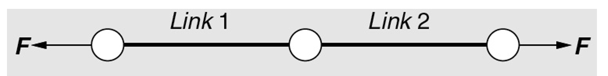
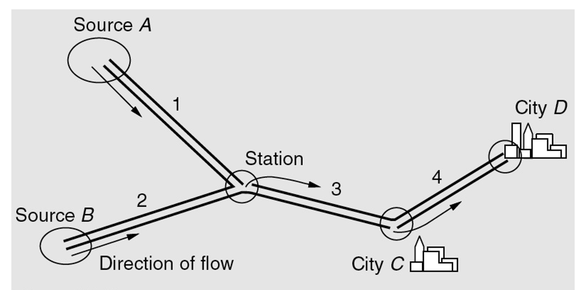

An experiment that can result in different outcomes, even though it is repeated in the same manner every time
Noise variables affect transformation of inputs to outputs
A contractor needs to acquire bulldozers for a new project and from prior experience knows that there is a 50% chance that each bulldozer will remain operational for at least 6 months. If they purchased 3 bulldozers, what is the probability that there will be only 1 bulldozer that is operational after 6 months?
The set of all possible outcomes of a random experiment is called the sample space of the experiment, denoted as \(S\)
Consider measurements of the recycle time of a flash for a camera, what is the sample space for:
An event is a subset of the sample space of a random experiment
\[(A^c)^c = A\]
\[A \cup A^c = S\]
Mutually exclusive intersection \[ A \cap B = \emptyset \]
\[ A \cap A^c = \emptyset \]
\[S^c = \emptyset \]
Let \(A\), \(B\), and \(C\) are three events. Find expressions for the following events:
\[A \cup A = A\] \[A \cap A = A\]
\[A \cup S = S\] \[A \cap S = A\]
\[A \cup B = B \cup A\] \[A \cap B = B \cap A\]
\[(A \cup B) \cup C = A \cup (B \cup C)\] \[(A \cap B) \cap C = A \cap (B \cap C)\]
\[(A \cup B) \cap C\]
\[(A \cap C) \cup (B \cap C)\]
\[(A \cup B) \cap C = (A \cap C) \cup (B \cap C)\] \[(A \cap B) \cup C = (A \cup C) \cap (B \cup C)\]
For two sets (or events) \(A\) and \(B\)
\[(A \cup B)^c = A^c \cap B^c\]
\[(A \cup B)^c\]
\[A^C \cap B^c\]
\[(E_1 \cup E_2 \cup ... \cup E_n)^c = E_1^c \cap E_2^c \cap ... \cap E_n^c\]
\[(E_1^c \cup E_2^c \cup ... \cup E_n^c)^c = E_1 \cap E_2 \cap ... \cap E_n\]
\[(E_1 \cap E_2 \cap ... \cap E_n)^c = E_1^c \cup E_2^c \cup ... \cup E_n^c\]
The direction of wind at a site is between due East (\(\theta=0^{\mathrm{\circ}}\)) and due North (\(\theta=90^{\mathrm{\circ}}\)). The wind speed \(V\) can be any positive value.
Consider a simple chain that would fail if either link breaks: \(E_1\) breakage of link 1 and \(E_2\) breakage of link 2.

Define the failure of the chain and non-failure in terms of \(E_1\) and \(E_2\).
Water supply for two cities C and D comes from sources A and B via pipelines 1-4.
 Assume that either one of the sources is by itself sufficient to supply water to both cities. If \(E_i\) is the failure of branch \(i\), describe the events of no shortage in each of the cities.